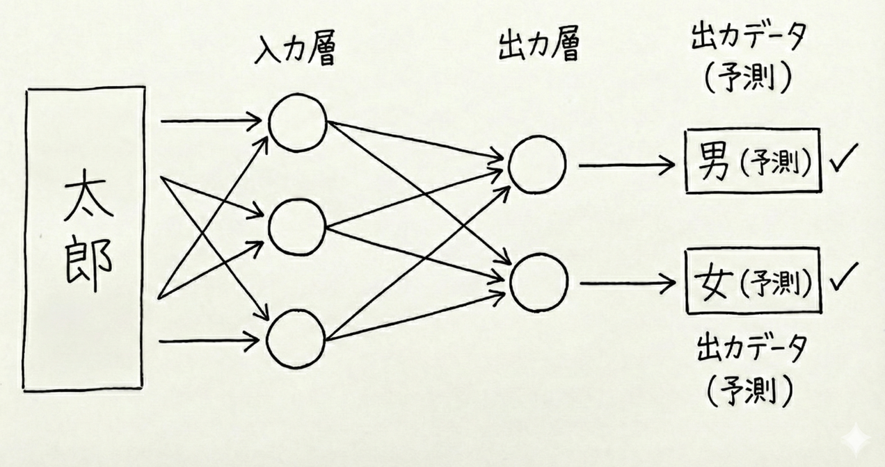

確率論、統計力学
子供のころは物理学者になりたかった。
才能がなかったのと、高校の時は数学のほうが
面白そうと思い数学科に進む。
ニューラルネットを
身近な数学を通じて理解すること

文章にでてくるそれぞれの単語をベクトル化し、
0をはさんで結合して新しいベクトルを作る。
コンピュータでは 0と1 の方が扱いやすい。
（変換された時のビット数は5で統一する）
各数字を 5ビット の二進数に変換
| 数値 | 二進数 |
|---|---|
| 1 | 00001 |
| 2 | 00010 |
| 3 | 00011 |
| 4 | 00100 |
| 5 | 00101 |
| 6 | 00110 |
| 7 | 00111 |
| 8 | 01000 |
| 9 | 01001 |
| 数値 | 二進数 |
|---|---|
| 10 | 01010 |
| 11 | 01011 |
| 12 | 01100 |
| 13 | 01101 |
| 14 | 01110 |
| 15 | 01111 |
| 16 | 10000 |
| 17 | 10001 |
| 18 | 10010 |
| 数値 | 二進数 |
|---|---|
| 19 | 10011 |
| 20 | 10100 |
| 21 | 10101 |
| 22 | 10110 |
| 23 | 10111 |
| 24 | 11000 |
| 25 | 11001 |
| 26 | 11010 |
| 0 | 00000 |
※ 空白（スペース）は 00000 に変換する
10文字の下の名前が200個与えられているとする。
それぞれの名前には男/女が分かっている。
名前をBinaryで表すと...
\( \Sigma = \{\vec{x}_1, \ldots, \vec{x}_M\} \) : M個の名前（二進数化されたもの）の集合
\( \vec{x}_i \in \{0, 1\}^{50} \) : 10文字の名前の二進数化
\( \vec{1} = (1, 1, \ldots, 1) \) : 50次元のベクトル
\( 2\vec{x} - \vec{1} = (2x_1 - 1, \ldots, 2x_{50} - 1) \in \{-1, 1\}^{50} \)
\( \vec{w} \) として \( \mathbf{1}\{ \vec{w} \cdot (2\vec{x} - \vec{1}) \ge 0 \} = y_{\vec{x}} \) ∀ \( \vec{x} \in \Sigma \)を満たすものが取れたとする。
データにない新しい名前 x' が来た時の判定方法:
JSON形式で1000件以上収集
[
{"name": "TARO", "sex": 1},
{"name": "SAKURA", "sex": 0},
{"name": "YUKI", "sex": 1},
{"name": "HINATA", "sex": 0},
...
]
sex: 1=男, 0=女
パーセプトロンを実装
w はモンテカルロで探索
精度：約87%
日本人の名前をローマ字で入力してください（例：TARO、SAKURA）
ニューラルネットワークで学習したモデルが性別を予測します（精度：約87%）
確率論では入力と出力が独立な確率変数で与えられる場合を考える
\( (\vec{x}^1, y^1), (\vec{x}^2, y^2), \ldots, (\vec{x}^m, y^m) \in \{-1, 1\}^n \times \{-1, 1\} \)
\( \vec{x}^i \in \{-1,1\}^n \)、\( y^i \in \{-1,1\} \) を一様・独立に選ぶ
データ数 \( m \) が小さいとき、条件をすべて満たす重みベクトルは存在しそう。
一方で \( m \) が大きいとき、条件が多すぎて解は存在しなさそう。
予想: ある \( \alpha_c > 0 \) が存在して、\( m = \alpha n \) とすると
\( \alpha > 0 \) を固定する
\( m = \alpha n \)（データ数）
\( \vec{x}^i \in \{-1,1\}^n \)、\( y^i \in \{-1,1\} \) を 一様・独立 に選ぶ
\[ \begin{aligned} f_{\mathrm{RS}}(\alpha) &= \inf_{q \in [0,1]} \sup_{r \ge 0} \Big\{ -\frac{r}{2}\log(1-q) + \alpha \, \mathbb{E}\Big[\log \mathbb{P}\Big(Z_2\geq \sqrt{\tfrac{q}{1-q}}\,Z_1\Big|~Z_1\Big)\Big] + \mathbb{E}\big[\log 2\cosh(\sqrt{r}\,Z_1)\big] \Big\}\\ &= \inf_{q \in [0,1]} \sup_{r \ge 0} \Big\{ -\frac{r}{2}\log(1-q) + \alpha \int_{-\infty}^{\infty} \frac{e^{-z^2/2}}{\sqrt{2\pi}}\,dz\, \log\!\left(\int_{\sqrt{\tfrac{q}{1-q}}\,z}^{\infty} \frac{e^{-t^2/2}}{\sqrt{2\pi}}\,dt\right) + \int_{-\infty}^{\infty} \frac{e^{-z^2/2}}{\sqrt{2\pi}}\,dz\, \log\!\left(2\cosh(\sqrt{r}\,z)\right) \Big\}, \end{aligned} \]
ここで \(Z_1, Z_2\) は独立な標準正規分布に従う確率変数
\(\alpha < \alpha_c^*\) のとき： \[ \lim_{n \to \infty} n^{-1} \log Z_{n, \alpha n} = f_{\mathrm{RS}}(\alpha)>0 \]
\(\alpha > \alpha_c^*\) のとき： \[ \mathbb{P}(Z_{n, \alpha n} = 0) \to 1 \]
解の数の対数が RS 公式で正確に計算できる（と予想される）
複数の隠れ層を持つネットワークの場合はどうなるか？
中島 秀太 / Shuta Nakajima
慶應義塾大学 准教授